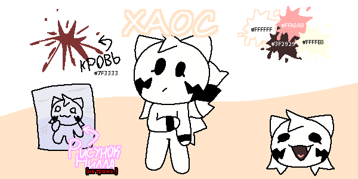

хаос

референс хаос
вид :: кошка
ДР :: 08.11.2009
пол :: женский
рост :: 140
вес :: 26
инфо
является персонажем вселенной Котикиса.
как персонаж
хаос дерзкая кошка. она относится наплевательски почти ко всем. у неё есть чувства к ниллу, который является ей близким другом. она обладает магией воздуха и воды :: магии воздуха она учится у самой богини воздуха Аэро, а магия воды далась быстро, поэтому она теперь мастер воды и даже разработала пару приемов.
хаос жила только с матерью, которая не давала дочери свободы и внимания. однажды, она узнала о том, что открыто обучение магии воды, поэтому ушла из дома и поселилась в особняке и училась магии у своего мастера, что далось ей с большой легкостью. после обучения магии воздуха Хаос хочет научиться игре на гитаре у гитар кэт. они знают друг друга, но недостаточно общаются. хаос мечтает выступить с гитар кэт на одной сцене, а та - овладеть магией воды.
внешность
хаос полностью имеет белый окрас шерсти. у неё длинная челка и волосы сзади. рисунки молний на щеках она нарисовала сама. на обеих руках хаос черные браслеты.
у хаос огромный, тяжелый, пушистый хвост. она не может его нормально контролировать, поэтому иногда надевает ошейник и привязывает свой хвост к нему. странно, но это помогает.